Areas¶
CalcpadCE ships a worksheet for every common 2D shape, each one giving the area and the perimeter (or arc length) from a few labelled inputs.
Pick the shape you need — square, circle, rectangle, regular polygon, triangle, parabola, ellipse, or one of the sector / segment variants — and override the inputs in the Desktop app; the result updates instantly.
Square¶
Area \(A = a^2\) and perimeter \(P = 4a\) of a square from a single side length.
'<div style="max-width:80mm;"><img style="height:60pt;" class="side" alt="square.png" src="../../Images/math/area/square.png"></div>
'Side length
a = ?
'Area
A = a^2
'Perimeter
P = 4*a
'
1
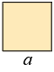
Side length
a = 1
Area
A = a2 = 12 = 1
Perimeter
P = 4 · a = 4 · 1 = 4
Circle¶
Area \(A = \pi d^2/4\) and circumference \(P = \pi d\) of a circle, parameterised by diameter.
'<div style="max-width:100mm;"><img style="height:70pt;" class="side" alt="circle.png" src="../../Images/math/area/circle.png"></div>
'Diameter
'2·<i>r</i> ='d = ?
'Area
A = π*d^2/4
'Circumference
P = π*d
'
1
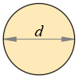
Diameter
2·r = d = 1
Area
A = π · d24 = 3.141593 · 124 = 0.7853982
Circumference
P = π · d = 3.141593 · 1 = 3.141593
Rectangle¶
Area \(A = a\, b\) and perimeter \(P = 2(a + b)\) of a rectangle from its two side lengths.
'<div style="max-width:100mm;"><img style="height:55pt;" class="side" alt="rectangle.png" src="../../Images/math/area/rectangle.png"></div>
'Dimensions
a = ?', 'b = ?
'Area
A = a*b
'Perimeter
P = 2*(a+b)
'
2 1
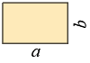
Dimensions
a = 2 , b = 1
Area
A = a · b = 2 · 1 = 2
Perimeter
P = 2 · ( a + b ) = 2 · ( 2 + 1 ) = 6
Trapezoid¶
Area \(A = \tfrac{1}{2}(a + b)\, h\) of a trapezoid from its two parallel sides and height.
"Area and Perimeter of Trapezoid
'<div style="max-width:90mm;"><img style="height:60pt;" class="side" alt="trapezoid.png" src="../../Images/math/area/trapezoid.png"></div>
'Base lengths
a = ?','b = ?
'Height
h = ?
'Area
A = (a+b)*h/2
'Perimeter (symmetrical figure only)
c = sqr(h^2 + (a - b)^2/4)
P = a+b + 2*c
'
2 1 1
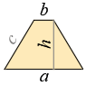
Base lengths
a = 2 , b = 1
Height
h = 1
Area
A = ( a + b ) · h2 = ( 2 + 1 ) · 12 = 1.5
Perimeter (symmetrical figure only)
c = h2 + ( a − b ) 24 = 12 + ( 2 − 1 ) 24 = 1.118034
P = a + b + 2 · c = 2 + 1 + 2 · 1.118034 = 5.236068
Polygon¶
Area and perimeter of a regular \(n\)-gon from side length \(a\), using \(A = \tfrac{n a^2}{4}\cot(\pi/n)\).
'<div style="max-width:110mm;"><img style="height:70pt;" class="side" alt="polygon.png" src="../../Images/math/area/polygon.png"></div>
'Number of sides -'n = ?
'Side length -'a = ?
'Area
α = 180/n'°
A = a^2*n/4*cot(α)
'Perimeter
P = n*a
'
8 1
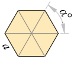
Number of sides - n = 8
Side length - a = 1
Area
α = 180n = 1808 = 22.5 °
A = a2 · n4 · cot ( α ) = 12 · 84 · cot ( 22.5 ) = 4.828427
Perimeter
P = n · a = 8 · 1 = 8
Equilateral Triangle¶
Area \(A = \tfrac{\sqrt{3}}{4} a^2\) and perimeter \(P = 3a\) of an equilateral triangle.
'<div style="max-width:110mm;"><img style="height:60pt;" class="side" alt="equilateral-triangle.png" src="../../Images/math/area/equilateral-triangle.png"></div>
'Side length
a = ?
'Area
A = a^2*sqr(3)/4
'Perimeter
P = 3*a
P = 3*a
P = 3*a
P = 3*a
'
1
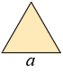
Side length
a = 1
Area
A = a2 · √ 34 = 12 · √ 34 = 0.4330127
Perimeter
P = 3 · a = 3 · 1 = 3
P = 3 · a = 3 · 1 = 3
P = 3 · a = 3 · 1 = 3
P = 3 · a = 3 · 1 = 3
Right Triangle¶
Area \(A = \tfrac{1}{2} a\, b\) and perimeter of a right triangle from its two legs (hypotenuse via Pythagoras).
'<div style="max-width:110mm;"><img style="height:60pt;" class="side" alt="right-triangle.png" src="../../Images/math/area/right-triangle.png"></div>
'Dimensions
a = ?','b = ?
c = sqr(a^2 + b^2)
'Area
A = a*b/2
'Perimeter
P = a + b + c
'
4 3
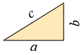
Dimensions
a = 4 , b = 3
c = √ a2 + b2 = √ 42 + 32 = 5
Area
A = a · b2 = 4 · 32 = 6
Perimeter
P = a + b + c = 4 + 3 + 5 = 12
Triangle¶
Area and perimeter of a general triangle from three side lengths via Heron formula, with a triangle-inequality guard.
'<div style="max-width:110mm;"><img style="height:55pt;" class="side" alt="triangle.png" src="../../Images/math/area/triangle.png"></div>
'Side lengths
a = ?','b = ?','c = ?
'<!--
#if (a + b > c)*(b + c > a)*(c + a > b)
'<-->
'Perimeter
P = a + b + c
'Area (Heron formula)
'Semiperimeter -'p = 0.5*P
A = sqr(p*(p - a)*(p - b)*(p - c))
'<!--
#else
'<-->
'The sum of the lengths of each two sides must be greater than the third side.
'<!--
#end if
'<-->
5 4 3
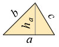
Side lengths
a = 5 , b = 4 , c = 3
Perimeter
P = a + b + c = 5 + 4 + 3 = 12
Area (Heron formula)
Semiperimeter - p = 0.5 · P = 0.5 · 12 = 6
A = √ p · ( p − a ) · ( p − b ) · ( p − c ) = √ 6 · ( 6 − 5 ) · ( 6 − 4 ) · ( 6 − 3 ) = 6
Triangle (Height)¶
Area \(A = \tfrac{1}{2} a\, h_a\) of a triangle from base and corresponding height.
'<div style="max-width:100mm;"><img style="height:55pt;" class="side" alt="triangle.png" src="../../Images/math/area/triangle.png"></div>
'Base -'a = ?
'Height -'h_a = ?
'Area -'A = a*h_a/2
'
2 1
Base - a = 2
Height - ha = 1
Area - A = a · ha2 = 2 · 12 = 1
Parabola¶
Area of a parabolic segment \(A = \tfrac{2}{3} a\, h\) from chord length and height.
"Area and Arc Length of Parabolic Segment
'<div style="max-width:120mm;"><img style="height:60pt;" class="side" alt="parabola.png" src="../../Images/math/area/parabola.png"></div>
'Dimensions
'Length -'a = ?
'Height -'b = ?
'Area
A = 2/3*a*b
'Arc length
'Assume'h = 4*b/a
'and'q = sqr(1 + h^2)
S = 0.5*a*(q + ln(h + q)/h)
'
4 2
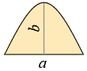
Dimensions
Length - a = 4
Height - b = 2
Area
A = 23 · a · b = 23 · 4 · 2 = 5.333333
Arc length
Assume h = 4 · ba = 4 · 24 = 2
and q = √ 1 + h2 = √ 1 + 22 = 2.236068
S = 0.5 · a · (q + ln ( h + q ) h) = 0.5 · 4 · (2.236068 + ln ( 2 + 2.236068 ) 2) = 5.915771
Ellipse¶
Area \(A = \pi\, a\, b\) and approximate circumference of an ellipse from its two semi-axes.
'<div style="max-width:110mm;"><img style="height:65pt;" class="side" alt="ellipse.png" src="../../Images/math/area/ellipse.png"></div>
'Dimensions
a = ?','b = ?
'Area
A = π*a*b/4
'Circumference
'Assume -'h = (a-b)^2/(a+b)^2
'Using the Ramanujan equation
P = π*(a+b)/2*(1 + 3*h/(10 + sqr(4 - 3*h)))
'Using series (up to the 4-th member)
P = π*(a+b)/2*(1 + 1/4*h + 1/64*h^2 + 1/256*h^3)
'
2 1
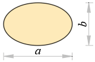
Dimensions
a = 2 , b = 1
Area
A = π · a · b4 = 3.141593 · 2 · 14 = 1.570796
Circumference
Assume - h = ( a − b ) 2 ( a + b ) 2 = ( 2 − 1 ) 2 ( 2 + 1 ) 2 = 0.1111111
Using the Ramanujan equation
P = π · ( a + b ) 2 · (1 + 3 · h10 + √ 4 − 3 · h) = 3.141593 · ( 2 + 1 ) 2 · (1 + 3 · 0.111111110 + √ 4 − 3 · 0.1111111) = 4.844224
Using series (up to the 4-th member)
P = π · ( a + b ) 2 · (1 + 14 · h + 164 · h2 + 1256 · h3) = 3.141593 · ( 2 + 1 ) 2 · (1 + 14 · 0.1111111 + 164 · 0.11111112 + 1256 · 0.11111113) = 4.844223
Sector (Angle)¶
Area and arc length of a circular sector from radius and central angle, valid for \(\alpha \le 360°\).
"Area and Arch Length of Circular Sector
'<div style="max-width:110mm;"><img style="height:60pt;" class="side" alt="sector-angle.png" src="../../Images/math/area/sector-angle.png"></div>
'Radius -'r = ?
'Angle -'α = ?'°
'<!--
#if α ≤ 180
'<-->
'Area
A = π*r^2*α/360
'Arch length
S = π*r*α/180
'<!--
#else
'<-->
'Angle must be less or equal to 180 °
'<!--
#end if
'<-->
1 60
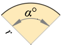
Radius - r = 1
Angle - α = 60 °
Area
A = π · r2 · α360 = 3.141593 · 12 · 60360 = 0.5235988
Arch length
S = π · r · α180 = 3.141593 · 1 · 60180 = 1.047198
Sector (Chord)¶
Area and arc length of a circular sector specified by its chord and height instead of the central angle.
"Area and Arch Length of Circular Sector
'<div style="max-width:110mm;"><img style="height:60pt;" class="side" alt="sector-chord.png" src="../../Images/math/area/sector-chord.png"></div>
'Dimensions
'Radius -'r = ?
'Chord -'a = ?
'<!--
#if a ≤ 2*r
'<-->
'Angle
α = 2*asin(a/(2*r))'°
'Area
A = π*r^2*α/360
'Arch length
S = π*r*α/180
'<!--
#else
'<-->
'Chord <i>a</i> must be less or equal to 2·<i>r</i>
'<!--
#end if
'<-->
1 1
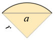
Dimensions
Radius - r = 1
Chord - a = 1
Angle
α = 2 · asin(a2 · r) = 2 · asin(12 · 1) = 60 °
Area
A = π · r2 · α360 = 3.141593 · 12 · 60360 = 0.5235988
Arch length
S = π · r · α180 = 3.141593 · 1 · 60180 = 1.047198
Segment (Angle)¶
Area and arc length of a circular segment from radius and central angle.
"Area and Arch Length of Circular Segment
'<div style="max-width:120mm;"><img style="height:70pt;" class="side" alt="segment-angle.png" src="../../Images/math/area/segment-angle.png"></div>
'Radius -'r = ?
'Angle -'α = ?'°
'<!--
#if α ≤ 180
'<-->
'Area
A = 0.5*(π*α/180 - sin(α))*r^2
'Arch length
S = π*r*α/180
'<!--
#else
'<-->
'Angle must be less or equal to 180 °
'<!--
#end if
'<-->
1 60
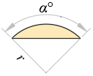
Radius - r = 1
Angle - α = 60 °
Area
A = 0.5 · (π · α180 − sin ( α ) ) · r2 = 0.5 · (3.141593 · 60180 − sin ( 60 ) ) · 12 = 0.09058607
Arch length
S = π · r · α180 = 3.141593 · 1 · 60180 = 1.047198
Segment (Chord)¶
Area and arc length of a circular segment specified by chord and height, with a chord-vs-height feasibility guard.
'<div style="max-width:120mm;"><img style="height:60pt;" class="side" alt="segment-chord.png" src="../../Images/math/area/segment-chord.png"></div>
'Dimensions
'Chord -'a = ?
'Height -'b = ?
'<!--
#if a ≥ 2*b
'<-->
'Radius
r = b/2 + a^2/(8*b)
'Angle
α = 2*asin(a/(2*r))'°
'Area
A = 0.5*(π*α/180 - sin(α))*r^2
'Arc length
S = π*r*α/180
'<!--
#else
'<-->
'Chord <i>a</i> must be greater or equal to 2·<i>b</i>
'<!--
#end if
'<-->
2 1
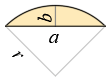
Dimensions
Chord - a = 2
Height - b = 1
Radius
r = b2 + a28 · b = 12 + 228 · 1 = 1
Angle
α = 2 · asin(a2 · r) = 2 · asin(22 · 1) = 180 °
Area
A = 0.5 · (π · α180 − sin ( α ) ) · r2 = 0.5 · (3.141593 · 180180 − sin ( 180 ) ) · 12 = 1.570796
Arc length
S = π · r · α180 = 3.141593 · 1 · 180180 = 3.141593
Spotted an error? Edit these examples.